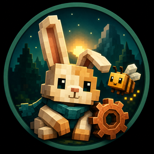
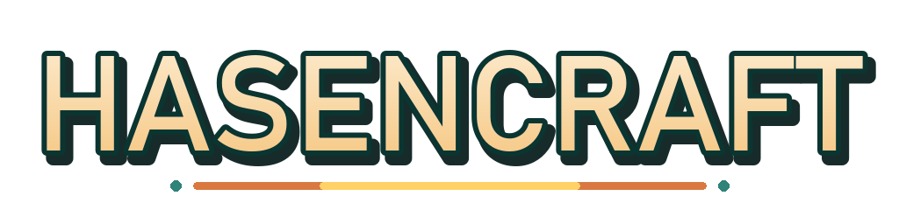

Mehr Sichtweite
Fluffy
Für leistungsstarke Rechner: höhere Sichtweite und Shader-Details als Startpunkt.
Importadresse manuell anzeigen
__FLUFFY_IMPORT_URL__

Gemütlich bauen. Weit entdecken.

Ein gemeinsames Minecraft-Modpack für Technik, Tierchen, Magie und große Erkundungsziele. Baue eine Basis, die sich nach Zuhause anfühlt – und entdecke, was dahinter liegt.
Stable: Hasencraft __STABLE_VERSION__
In Prism Launcher Instanz hinzufügen → Importieren wählen, dann das passende Profil kopieren und einfügen. Beide enthalten dieselben Mods, Welten und Inhalte – nur die Grafikvorgaben unterscheiden sich.
Mehr Sichtweite
Für leistungsstarke Rechner: höhere Sichtweite und Shader-Details als Startpunkt.
__FLUFFY_IMPORT_URL__
Gleiche Welt, sanftere Grafik
Für ältere oder mittelstarke Rechner: zurückhaltendere Grafik- und Speicherwerte.
__COZY_IMPORT_URL__